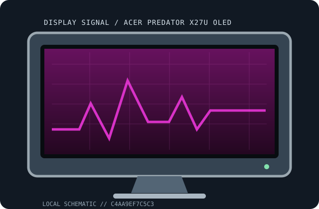

[ INDIVIDUAL COMPONENT // DISPLAYS ]
Acer Predator X27U OLED
26.5-inch QHD OLED gaming monitor OLED displays.

IDENTIFICATION: Match the full model and regional suffix on the rear label. Values are tied to the named model; revision-dependent electrical/mechanical details are qualified rather than guessed.
Specifications
| Catalog subcategory | OLED displays |
|---|---|
| Exact product / family | Acer Predator X27U OLED |
| Panel / tube | 26.5-inch OLED, 2560 × 1440 |
| Native timing / refresh | QHD up to 240 Hz; confirm exact SKU |
| Inputs | DP 1.4, HDMI 2.0; USB-C varies by SKU |
| Power | Rated draw and regional input values are omitted unless confirmed for the exact model/configuration; manual and rear label govern. |
| Stand / size | Diagonal class shown above; stand/rack/VESA parts depend on product bundle and options. |
Revision, signal & host compatibility
Verify full suffix, firmware and I/O options. Sony BVM-HX310 is a dual-layer LCD, not emissive OLED; similar model names may have different panel technologies.
Match resolution, refresh, bit depth, link mapping and interface bandwidth. Broadcast 4K may depend on SDI mapping/option boards; high refresh may require DSC and a supported GPU.
Preservation & repair notes
Log panel hours, firmware, calibration and compensation cycles. Avoid long static images and use documented OLED care/pixel-refresh procedures.
Log serial/date label, accessories, image condition, source signal, calibration, firmware and repair history. Use the manufacturer's service procedures and qualified technicians for internal work.
Manufacturer manuals & sources
- Acer — official support and documentation portalLocate the exact model manual/specification at the manufacturer's portal. The chassis label and matching revision document govern power, timings and service.
- Model-specific manual catalog search: Acer Predator X27U OLEDDocumentation discovery reference; verify any located guide against the exact model/revision before applying specifications or repair instructions.